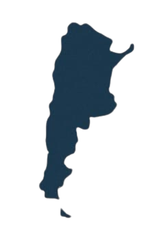

leyendAR
Usuario
Mitos
Cerrar
📌
Inicio
Accedé al minimapa, descubrí un mito recomendado y navegá por las opciones principales.
📖
Información sobre el proyecto
Enterate de la finalidad, inspiración y cómo se construyó este mapa interactivo.
👻
Mitos
Explorá la colección completa de leyendas y relatos de cada región de Argentina.
🔍
Agregar mito
¿Conocés una historia o leyenda local? ¡Sumala al mapa para que otros la descubran!